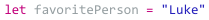
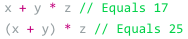
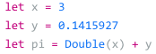

App Development with Swift
Compound Assignment
- An earlier snippet updated a variable by adding a number to itself
- +=
- Adds and outputs the answer of the inputted number
- -=
- Subtracts and outputs the answer of the inputted number
- *=
- Multiplies and outputs the answer of the inputted number
- /=
- Divides and outputs the answer of the iputted number
Assigning Values
- Uses the = operator to assign a value
- The name on the left is assigned the value on the right

Assinging Operators
Order of Operations, BEDMAS
- Always follows a specific order
- Multiplication and division have priority over addition and subtraction
- Parentheses has the priority over all four

Numeric Type Conversion
- Since we cannot mix and match number types when performing mathematical operations, we use the revised code to convert types
